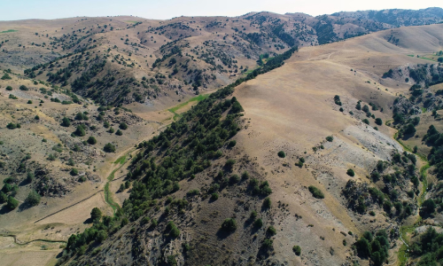

HISTORY
-
NATIONAL
GEOGRAPHIC
HISTORY
MAGAZINE -
EXPLORE
BLACK
HISTORY
IN AMERICA -
OUT
OF
EDEN
WALK
History is a magazine published by the National Geographic Society that explores the fascinating stories of world history, archaeology, and cultural heritage. Known for its in-depth analysis and visually stunning presentation, the magazine appeals to history enthusiasts and general readers alike.
Get the big story of the day, and explore the past and our place in the modern world. History comes alive with every issue. Unveiling the stories that shaped our world.
History & Culture
-
The bizarre story of when Australia went to war with emus—and lost
-
In the 1930s, a battle unlike any other unfolded in the Australian outback. After World War I, thousands of “soldier settlers” moved to Western Australia, attracted by government incentives to develop the land. As a result, thousands of emus—tall, flightless birds—in search of food, migrated into these newly established farms and trampled crops along the way.
The government's response was swift and unusual: dispatched soldiers armed with machine guns to eliminate more than 20,000 emus. What they expected to be a quick and decisive victory turned into a humbling and absurd episode known as the “Emu War.”
But this bizarre chapter in history wasn't just a military misstep—it revealed the emus' critical role in Australia's ecosystems and solidified their status as one of the country's most iconic species.
“They're pretty iconic: very curious, not scared, quite confident,” says Comacchio noting the birds' quirky behaviors, such as hopping excitedly from one leg to the other. “People love them.”
-
- Lost Silk Road cities were just discovered with groundbreaking tech
- Scientists were surprised to find a medieval metropolis atop mountains, providing new insights into life along the ancient trade route. “This changes everything we thought we knew.”
- Researchers have discovered the remains of medieval cities perched above the ancient Silk Road in the rugged mountains of southeastern Uzbekistan. One of them is a sprawling, high-altitude metropolis that lay hidden for centuries, in a place where few expected to find signs of ancient civilizations.
- The discovery, made possible by new drone-based lidar technology, challenges long-held assumptions about urban life in the remote mountains of Central Asia more than a thousand years ago.
- 
-
- 'New Kid on the Block'
- For centuries, Silk Road historians have focused on the nomadic tribes and lowland empires that dominated the Uzbekistan region, often painting the highlands as marginal or peripheral to life in the valleys below. But the existence of extensive urban centers suggests that the mountains were home to their own distinct societies, with complex economies, political systems, and cultures.
-
83 years after Pearl Harbor, here's how the attack changed history
-
Certain of inevitable war with the U.S., Japan launched a preemptive strike that shocked Americans and prompted the nation to enter World War II.
The attack shocked the nation—and thrust the U.S. into a war it had managed to sidestep for years. The day after the attack, President Roosevelt asked Congress for a declaration of war against Japan. Calling December 7 a “date which shall live in infamy,” he told the U.S. Congress that the nation was in grave danger. Only one member of Congress, Representative Jeannette Rankin of Montana, voted against the declaration. Rankin, a pacifist and the first woman in Congress, had also voted against the U.S. entering into World War I.
On December 11, both Germany and Italy honored their pact with Japan and declared war against the U.S., which swiftly reciprocated. What followed would be a conflict that laid waste to much of Europe and Japan and that ended in 15 million battle deaths, 25 million wounded in battle, and at least 45 million civilian deaths. Ultimately, 416,800 American service members would die in the war.
Pearl Harbor had other brutal legacies. The Japanese military's act was used to justify the internment of about 120,000 people of Japanese descent in the mainland U.S., including 70,000 U.S. citizens. And it forever ended the U.S.' pre-1941 stance of isolationism and neutrality.
The attack on Pearl Harbor marked the entry of the world's mightiest military power into World War II. It was also a turning point for the nation. “Everyone I talk to seems to feel that the old world we lived in before December 7, 1941 has passed out of existence,” Pittsburgh cab company executive Paul L. Houston said in a man-on-the-street interview in February 1942. “And we are in a whole new universe.”
-
- Why this ancient hat is the 2024 Olympic mascot
- When the first official Olympic mascot—a rainbow-hued dachshund named Waldi—debuted at the 1972 Olympic games in Munich, Germany, it became a popular symbol of both the international event and the host country. Since then, most Olympic mascots have been colorful animal characters. For the 2024 Summer Olympics, however, host country France has chosen a hat with an almost unpronounceable name.
- Smiley Phryge (pronounced, with French style, as “Free-juh”) represents what's known as a Phrygian cap, based on similar caps worn by 18th-century French revolutionaries, who saw it as a symbol of freedom. In Eugene Delacroix's painting Liberty Leading the People, the allegorical figure of Liberty hoists the French flag while wearing such a cap, with its distinctive forward-facing tip.
-
After the end of the Roman Empire, however, the symbolism of the Phrygian cap becomes unclear.
Roman art features another type of cap, a conical hat called the pileus, which was given to Roman slaves when they were freed and became a visual symbol of manumission, or freedom from slavery.
Rose thinks ancient depictions of the pileus and the Phrygian cap became muddled in the 18th century, when revolutionary artists in Europe looked for symbols of freedom in Roman art.
“When the French and British wanted to choose a cap of liberty from antiquity, they got it wrong,” he says. “They chose the Phrygian cap, which signified Middle East status, rather than the pileus, which signified liberty— and so the Phrygian cap came to be interpreted as a symbol of liberty.”
-
- Who built this mysterious settlement in Madagascar?
- The carved rock niches and stone walls of the mysterious Teniky archaeological site in Madagascar have long puzzled scientists. An early theory held that shipwrecked Portuguese sailors were the original architects in the 1500s.
- Now abandoned amid a landscape of tropical forests, rocky hillsides and towering mountain ridges in the southwest of Madagascar, Teniky is more than 100 miles from the nearest coast and about as far from anywhere that you can get on this Texas-sized island in the Indian Ocean.
- The dozens of niches carved into its cliffs look like small elevated rooms, a few feet wide and deep; many of their entrances are surrounded by circular recesses, possibly so they could be closed with doors of wood or stone.